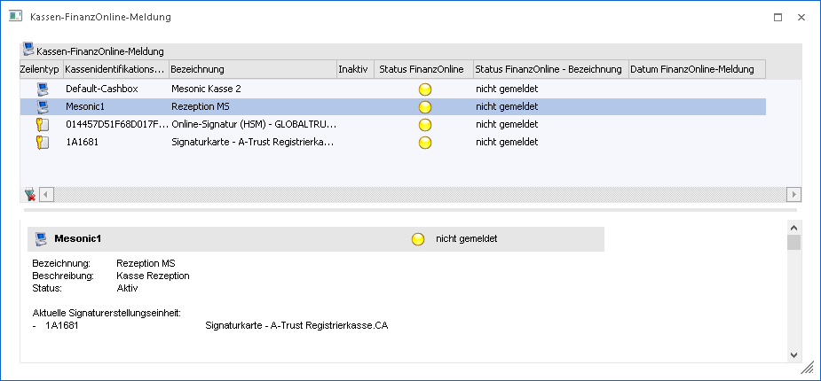
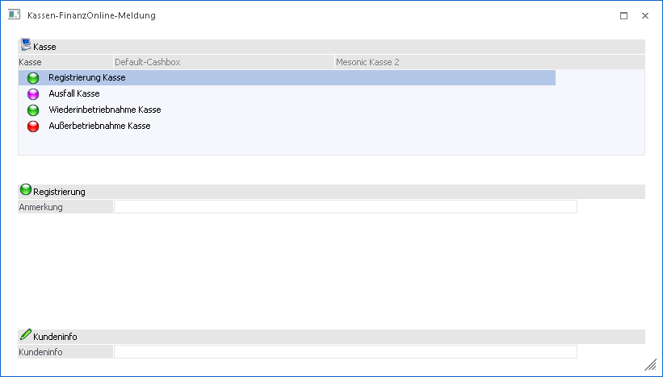
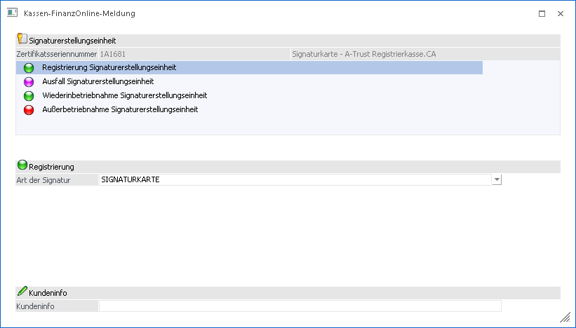
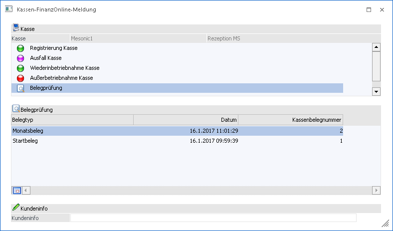
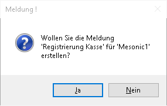
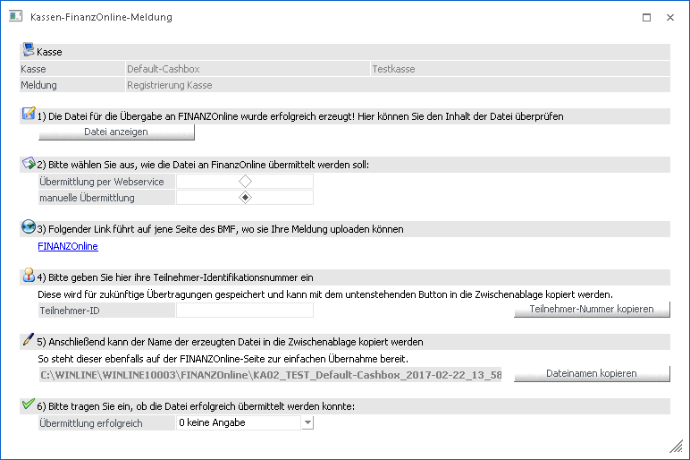

Im Menüpunkt
1 WinLine FAKT
1 Erfassen
1 Kassen-FinanzOnline-Meldung
können die in den Kasse-Stammdaten angelegten Kassen bzw. Signaturen ausgewählt und eine XML-Datei erstellt werden, welche im FinanzOnline-Portal hochgeladen und dadurch auch gesetzeskonform gemeldet werden können.
Beim Öffnen des Fensters ist im oberen Bereich eine Tabelle ersichtlich, welche alle angelegten Kassen (Kassen-Stammdate) und deren eingelesenen Signaturen beinhaltet.

In der Tabelle gibt es folgende Spalten:
Ø Zeilentyp
Hier ist per Symbol ersichtlich, ob es sich hierbei um eine Kasse () oder eine Signatur handelt ()
Ø Kassenidentifikationsnummer/Zertifikatsseriennummer
Anhand dieser Spalte kann die Kassenidentifikationsnummer bzw. die Seriennummer des eingelesenen Zertifikats herausgefunden werden.
Ø Bezeichnung
Hier ist die Bezeichnung ersichtlich, welche in den Kassen-Stammdaten eingetragen wurde.
Ø Inaktiv
Falls die Funktion "Inaktive anzeigen" aktiviert wurde, ist in dieser Spalte per Symbol ersichtlich, welche Kassen bereits lt. Kassen-Stammdaten inaktiv gesetzt wurden.
Ø Status FinanzOnline
Die Kasse bzw. das Zertifikat wurden angelegt aber noch nicht gemeldet.
Diese Kasse/Zertifikat ist registriert und in Betrieb.
Die Kasse/Zertifikat wurde außer Betrieb gemeldet.
Diese Kasse ist ohne Signatur angemeldet und somit können keine Meldungen
erstellt werden.
Für diese Kasse/Zertifikat wurde ein Ausfall gemeldet
Ø Datum FinanzOnline-Meldung
Hier ist das Datum der letzten Meldung ersichtlich.
Unter dieser Tabelle ist ein Bereich ersichtlich, der zur markierten Kasse bzw. Signatur einige Informationen liefert lt. Kassen-Stammdaten liefert.
Wenn eine Zeile in der Tabelle markiert ist, kann mittels Button "Vor" in den nächsten Schritt gewechselt werden. Wenn eine Registrierkasse markiert wurde können folgende Aktionen im Folgeschritt ausgewählt werden:

Ø Registrierung Kasse
Hier kann eine Anmerkung bzw. die Bezeichnung der Kasse angegeben werden.
Ø Ausfall Kasse
Eine Begründung sowie Datum und Uhrzeit des Ausfalls müssen angegeben werden.
Ø Wiederinbetriebnahme Kasse
Es muss das Datum und die Uhrzeit von der Wiederinbetriebnahme angegeben werden.
Ø Außerbetriebnahme Kasse
Auswahl, ob die Kasse planmäßig oder durch einen irreparablen Schaden außer Betrieb genommen wurde.
Wenn ein Zertifikat markiert wurde, kann über folgende Meldungen entschieden werden:

Ø Registrierung Signaturerstellungseinheit
Auswahl zwischen Dienstleister (A-Trust, Globaltrust etc.), eigenes HSM oder Signaturkarte.
Ø Ausfall Signaturerstellungseinheit
Begründung des Ausfalls und Datum und Uhrzeit muss gewählt werden.
Ø Wiederinbetriebnahme Signaturerstellungseinheit
Es muss das Datum und die Uhrzeit von der Wiederinbetriebnahme angegeben werden.
Ø Außerbetriebnahme Signaturerstellungseinheit
Eingabe, ob die Signatur Planmäßig oder durch einen irreparablen Schaden außer Betrieb genommen wurde.
Das Feld Kundeninfo kann bei jeder Meldung für interne Notizen verwendet werden und wird in die XML-Datei geschrieben.
Belegprüfung:
Sofern bei einer Kasse bereits ein Startbeleg erzeugt wurde, kann bei der Kasse auch die Funktion "Belegprüfung" ausgewählt werden.

Bei der Belegprüfung sind alle erstellten Start- Monats- und Schlussbelege ersichtlich und können zur Meldung ausgewählt werden.
Durch Markieren des gewünschten Belegs und bestätigen des Buttons "OK", öffnet sich eine Abfrage, ob diese Meldung erstellt werden soll.

Wenn diese Meldung mittels "Ja" bestätigt wird, wird die XML-Datei erzeugt und es öffnet sich das Fenster zur Meldungsübersicht, andernfalls wird keine Datei erstellt und wieder in die Tabellenansicht gewechselt.

Wenn diese Ansicht des Fensters ersichtlich ist, wurde die XML-Datei bereits erzeugt und kann nun im Schritt 1) Datei anzeigen angezeigt und der Inhalt der Datei kann überprüft werden.
Im Schritt 2) kann gewählt werden, ob die entstandene Datei über einen Webservice Benutzer direkt an FinanzOnline gemeldet werden soll oder über eine manuelle Übermittlung. Wenn die manuelle Übermittlung gewählt wird, muss die entstandene XML-Datei noch im FinanzOnline-Portal hochgeladen werden.